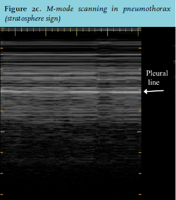
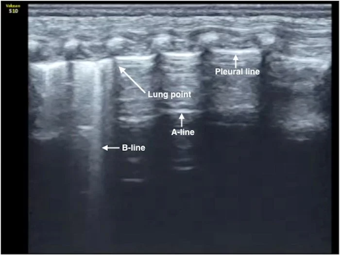
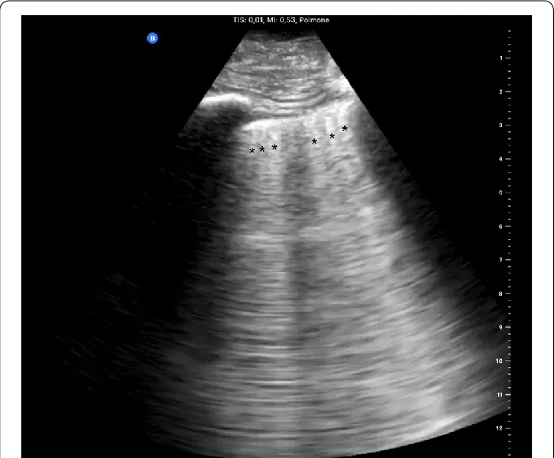
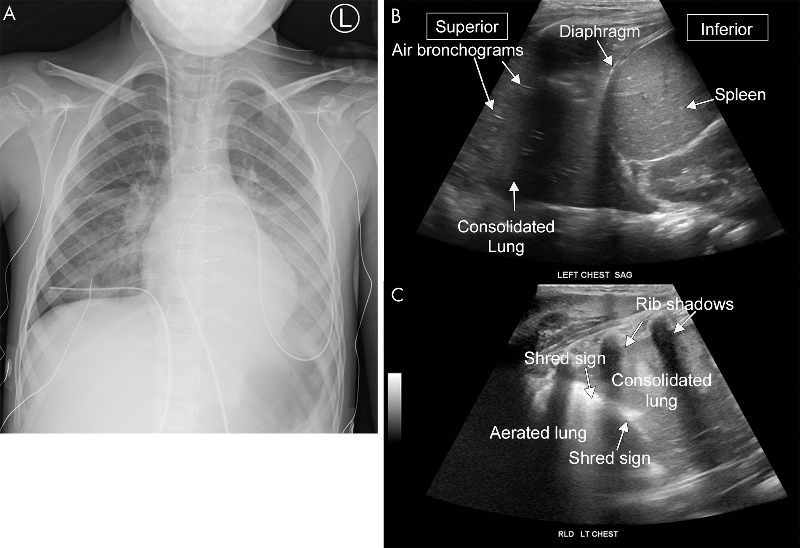
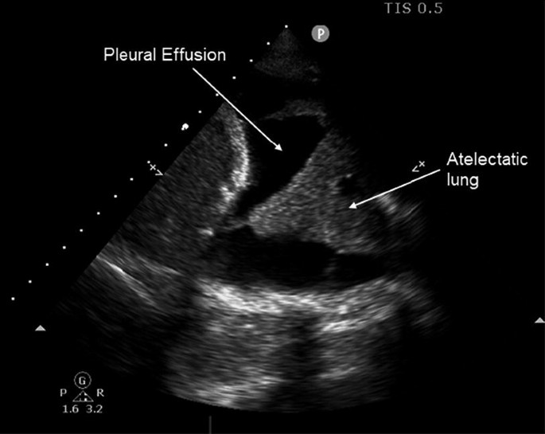

8-Zone Protocol
Per hemithorax — Zone 1: Upper anterior (2nd ICS, MCL) | Zone 2: Lower anterior (4th–5th ICS, MCL) | Zone 3: Upper lateral (axillary, above nipple) | Zone 4: Lower lateral (axillary, below nipple)
Bat Sign
Two rib shadows flanking the pleural line — “bat wings.” Confirms correct probe positioning over lung. Bright hyperechoic pleural line between the ribs.
Lung Sliding
Shimmering motion of visceral against parietal pleura during respiration. B-mode: “sliding” at pleural line. M-mode: seashore sign (granular pattern below pleural line).
Lung Pulse
Cardiac pulsation transmitted to pleura during apnea or atelectasis. Indicates visceral-parietal contact without respiratory sliding.
A-Lines
Horizontal hyperechoic reverberations at equal intervals from pleural line. Normal in aerated lung. Must combine with lung sliding to confirm no PTX.
4.2 Pneumothorax — Diagnostic Algorithm
LUS has superior sensitivity to supine CXR for PTX and comparable specificity to CT.3 The stepwise approach below synthesizes the core signs described in the 2012 international recommendations1 and the atypical-sign literature2 into a practical decision sequence.
1
STEP 1 — Lung Motion: Is lung sliding OR lung pulse present?
→ YES: No pneumothorax. STOP.
→ NO: Proceed to Step 2.
2
STEP 2 — Parenchymal Signs: Are B-lines or consolidations present at the zone of absent sliding?
→ YES (B-lines or consolidation): PTX RULED OUT at this zone. B-lines require visceral-parietal contact.
→ NO: PTX presumed. Proceed to Step 3.
3
STEP 3 — Confirmation: Search for lung point OR hydropoint.
→ Lung point found: PTX HIGH CERTAINTY (pathognomonic when present).
→ No lung point — patient UNSTABLE: PTX — consider emergency drainage now.
→ No lung point — patient STABLE: additional imaging (CXR and/or CT).
2025: Trend Toward Conservative PTX Management
A 2025 review in Breathe highlights a growing shift toward conservative management of pneumothorax once diagnosed — including ambulatory management and smaller catheters over traditional large-bore chest tubes for select small or stable pneumothoraces. The CoMiTED trial is ongoing, evaluating conservative management specifically for traumatic pneumothorax.20 The LUS diagnostic algorithm above is unchanged; this applies to management decisions downstream.
| Finding | Description | Significance |
|---|
| Absent lung sliding | No motion at pleural line during respiration | Necessary but not sufficient for PTX. Also: apnea, consolidation to pleura, pleurodesis, main-stem intubation. |
| Stratosphere sign (M-mode) | Horizontal lines both above and below pleural line (no granular pattern) | Absent sliding on M-mode. Replaces normal seashore sign. |
| Absent B-lines | Only A-lines visible, no B-lines | Supports but does not confirm PTX. B-lines cannot transmit through air. |
| Lung Point | Precise location where sliding returns (inspiration) and disappears (expiration) as probe moves from PTX zone to normal lung | Pathognomonic for PTX. Specificity ~100%. Location estimates PTX size. |
| Hydropoint2 | Sliding loss due to large pleural effusion mimicking PTX — described as the interposition between an anechoic fluid space and a non-sliding A-pattern | Important mimic. Distinguish by B-lines or effusion at adjacent zones. Prevents false PTX diagnosis. |

M-mode in pneumothorax (stratosphere sign): uniform horizontal parallel lines on both sides of the pleural line — no granular pattern beneath. Pleural line labeled.

Lung point (B-mode): transition at pleural line between B-line zone (lung contact, left) and A-line zone (PTX, right). Lung point, A-line, B-line, and pleural line labeled. Pathognomonic for PTX border.
Pediatric Consideration
Pediatric pneumothorax literature is far more limited than adult data; most lung-point sensitivity/specificity estimates are extrapolated from adult cohorts. A single normal lung-sliding view is less reassuring in a crying, poorly cooperative child — confirm across multiple zones before excluding pneumothorax.
4.3 B-Lines & Pulmonary Interstitial Syndrome
B-lines are laser-like hyperechoic vertical artifacts arising from the pleural line, extending to the bottom of the screen without fading, erasing A-lines, and moving with lung sliding. They represent thickened interlobular septa from interstitial fluid.
B-Line Criteria (All 5)
- Arises from pleural line
- Hyperechoic (bright as pleura)
- Laser-like, vertical, narrow
- Extends to bottom of screen without fading
- Erases A-lines
B-Line Quantification
- ≤2 per zone: Normal (esp. bases)
- ≥3 per zone: Interstitial syndrome (positive zone)
- Bilateral ≥2 positive zones/side: Pulmonary edema pattern
- Confluent B-lines (white lung): Severe edema or ARDS
B-Line Differential
- Cardiogenic pulmonary edema (bilateral, uniform)
- ARDS (bilateral, patchy, with consolidation)
- Pneumonia (focal, unilateral zone)
- Pulmonary fibrosis (bilateral, irregular pleura)
- Pulmonary contusion (trauma zone)
- COVID-19 (bilateral, subpleural B-lines)
Z-Lines vs. B-Lines
Z-lines are short, ill-defined, vertical artifacts that do NOT reach the screen bottom and do NOT erase A-lines. Normal variant with no clinical significance. The distinction is critical — never count Z-lines as B-lines.
| Feature | Cardiogenic Edema | ARDS | Pneumonia |
|---|
| B-line distribution | Bilateral, symmetric, gravity-dependent | Bilateral, patchy, non-dependent too | Focal, asymmetric, zonal |
| Pleural line | Smooth, regular | Irregular, fragmented | May be irregular at consolidation border |
| Consolidation | Absent or basal atelectasis only | Present (subpleural, posterior) | Focal hepatization |
| Pleural effusion | Common, bilateral | Absent or small | Parapneumonic (unilateral) |
| Response to diuresis | B-lines resolve within hours | B-lines persist | B-lines persist |

Confluent B-lines / white lung: B-lines filling entire image with no A-lines visible. Pattern of severe pulmonary edema or ARDS.
Pediatric Consideration
Adult B-line count thresholds do not transfer directly to children. Scattered B-lines in dependent zones can be a normal finding, particularly in neonates and young infants — correlate with clinical context rather than an absolute B-line count.
4.4 Pulmonary Consolidation
Consolidated lung becomes sonographically visible — its tissue-like density transmits sound rather than reflecting it. Consolidated lung resembles liver in texture (hepatization).
Tissue Sign (Hepatization)
Consolidated lung appears liver-like. Visible with loss of normal A-line/pleural reflection pattern at surface.
Air Bronchograms
Hyperechoic branching structures (air-filled bronchi) within consolidation. Dynamic air bronchograms (moving with breathing) predict pneumonia vs. atelectasis (Sn 61%, Sp 94%).
Fluid Bronchograms
Anechoic branching tubular structures within consolidation — mucus or fluid-filled bronchi. Associated with complete atelectasis.
Shred Sign
Irregular, jagged deep border of consolidation with aerated lung beneath. Specific for non-lobar subpleural infarct or pulmonary contusion.

Panel A: CXR bilateral consolidation. Panel B: LUS hepatization with air bronchograms, diaphragm, spleen labeled. Panel C: shred sign — consolidated vs. aerated lung boundary. Source: Radiology: Cardiothoracic Imaging, RSNA (Fig. 9).
4.5 Pleural Effusion
LUS detects pleural effusions at volumes as low as 20–100 mL and is more sensitive than supine CXR. Optimal window: posterior axillary line, 6th–9th ICS, with curvilinear probe.
| Feature | Transudate | Exudate / Complicated |
|---|
| Echogenicity | Anechoic (pure black) | Echogenic debris, septations, or loculations |
| Septations | None | Present in empyema, hemothorax |
| Lung compression | Compressive atelectasis of lung base visible (“jellyfish sign”) | Same; may have consolidation below fluid |
Effusion vs. Consolidation vs. Subphrenic Fluid
Effusion: anechoic, above diaphragm, lung floating within it. Consolidation: echogenic tissue with bronchograms. Subphrenic fluid: below diaphragm, between liver/spleen and diaphragm. Mirror-image artifact of liver may mimic pleural effusion — identify diaphragm position.

Pleural effusion (anechoic, above diaphragm) with atelectatic lung floating within it. Pleural effusion and atelectatic lung labeled.
4.6 BLUE Protocol — Acute Dyspnea
Bedside Lung Ultrasound in Emergency (Lichtenstein & Mezière, Chest 2008): 90.5% accuracy for diagnosis of acute dyspnea etiology.19
1
Assess bilateral anterior zones: sliding present? B-lines present?
→ A-profile bilateral (A-lines, sliding present): Normal, PE, or hyperventilation. Check DVT — DVT+ = BLUE-PLUS profile → PE likely.
→ B-profile bilateral (B-lines, sliding present): Cardiogenic pulmonary edema (98% PPV). Confirm with cardiac POCUS.
→ A/B profile (A one side, B other): Pneumonia.
→ C-profile (anterior consolidation + B-lines): Pneumonia.
→ A-profile + absent sliding: Pneumothorax (proceed to 2025 PTX algorithm above).
2
If B-profile: perform cardiac FoCUS to confirm cardiogenic (reduced EF, B-lines resolve with diuresis) vs. non-cardiogenic (normal or high EF, ARDS/pneumonia).
3
If A-profile without DVT: consider PE vs. COPD/asthma. Post-POCUS probability assessment.